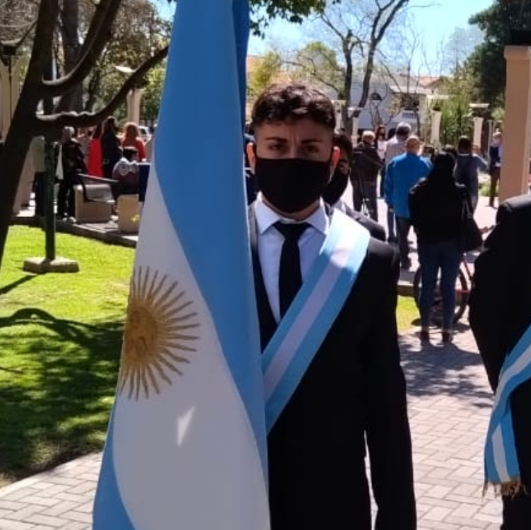

Aprendamos juntos es una plataforma web de libre acceso destinada al desarrollo del aprendizaje de todo aquel interesado en la programacion web, es desarrollada por mi, un developer recientemente iniciado que te brindara toda aquella herramienta o tip que crea que fue importante para adquirir conocimientos en la materia.
- Esta página, basicamente muestra mi camino hacia mi sueño de convertirme en desarrollador :) -
¿Quien soy?
Mi nombre en Gonzalo Sanchez, soy un joven de 19 años que nacio y vive en Mendoza, Argentina, soy egresado de una escuela de orientacion técnica (soy tecnico mecánico), actualmente me desempeño como operador de un centro de mecanizado CNC y mi trabajo basicamente consiste en cosas que estan muy alejadas del desarrollo web, sin embargo es una gran herramienta para costear mi busqueda de conocimiento en este hermoso mundo de la programación.

¡Vamos a armar nuestra ruta!
Para crear un camino de aprendizaje exitoso es importante saber dónde terminará el usuario. Debe haber un resultado deseado en mente; una definición de éxito cuando se completa. Esto se puede definir a partir de los roles que tenga la empresa, pero es importante centrarse en lo que se logrará al final del camino.